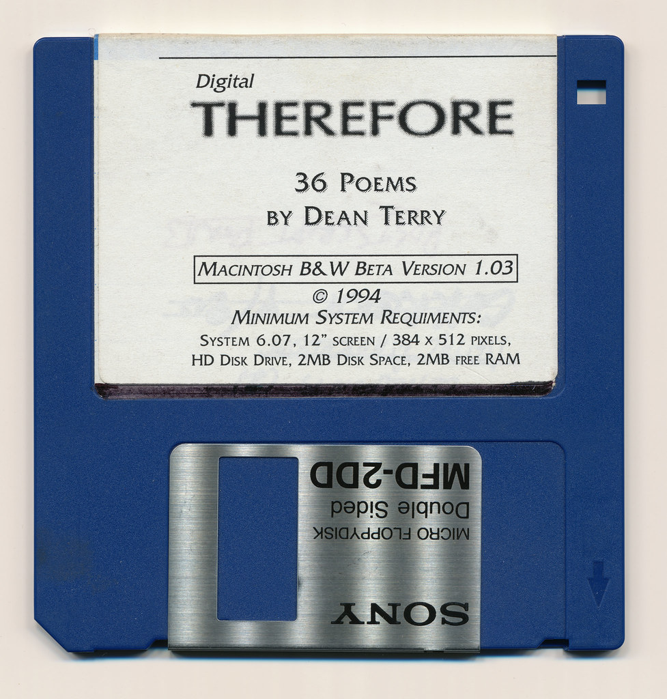
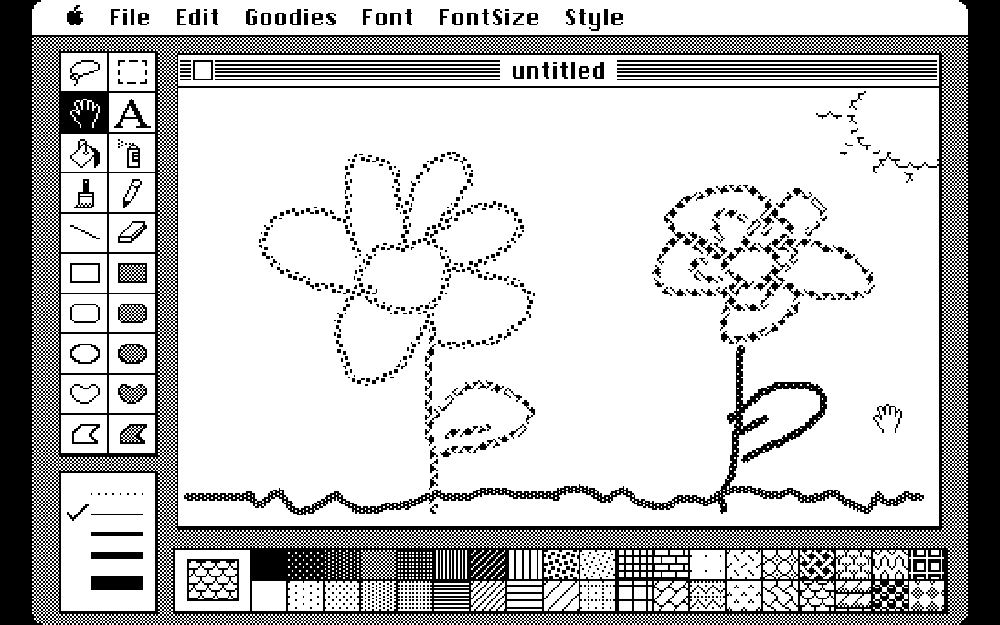

Emulation for Archivists
What you need for emulation
Now that we understand the basics of emulation, the specifics to actually emulate digital content can vary widely based on the technical presentation needs. In this section we'll focus on larger concepts to consider to implement emulation for access to your archival material.
Know your content
You have something you want emulation to help you access, but what is it, exactly? When we use computers to run software and look at files, we are engaging a complex stack that involves hardware, operating system environments, software, and files themselves (Gates 2020). Effective emulation will require determining the appropriate combination of these elements to produce the access result you want. While emulation can ease the hardware requirement, the other three must be considered to work together.

Review your documentation
Start by looking over any documentation you have to accompany the digital content you want to emulate. Is there any accompanying text or labels that indicate system requirements required to run it? Do you know what kind of computer was originally used to create the file? All documentation will be useful to determining the appropriate emulation environment.
In Module 1, we looked at "The Would-Be Gentleman" case at Stanford University Libraries, in which documentation stored with the game helped the archivists determine the earlier version of MacOS needed to emulate the software.
Tip: Take careful and detailed notes of any information you can gather while investigating your digital content. This will become important documentation for future archivists!
Analyzing file formats and content
File format extensions like .JPG or .PDF can tell you some information about the type of file you have, but this is often insufficient for determining the most appropriate way to view it. Formats with the same extensions are not always exactly the same, and especially for those like JPEG and PDF that have been in use for thirty or more years. Different versions with different capabilities may have been released throughout their history. The PRONOM Technical Registry lists four pages of results when searching PDF. How do you know which kind you have?
Tools like MediaInfo, JHOVE, and DROID can extract technical information about a file to indicate a corresponding computing environment. DROID refers to PRONOM to identify file formats, and the Library of Congress' Sustainability of Digital Formats is another useful guide for formats. These tools can be especially useful if you encounter a format you're not immediately familiar with, which could mean it's a good case for emulation.
These tools can help gather information about a specific file, but they may not be able to provide details about additional dependencies or requirements. Nonetheless, understanding as much as you can about the specifics of your file will help determine the appropriate software needed to display it.
Analyzing software
All files require software to display their content, so your emulation environment will also need to include software within it.
Some files may require proprietary programs to match their proprietary formats (such as Adobe Photoshop files only opening in Adobe programs), which cases you will likely want to emulate that specific software to access the file. Alternative or open-source software may also be an option, even if the program wasn't the original one used to create the file. Using alternative software requires additional consideration concerning the desired "look and feel" of emulation (see below). For example, the open-source image program GIMP can open Photoshop PSD files, but the results will not replicate the complex capabilities of Photoshop's editing suite.
The EaaSI program is developing a Universal Virtual Indicator (UVI) that would automatically match files to required software and dependencies, making opening an obsolete file as easy as clicking a link to its appropriate software and environment. In a 2018 blog post, EaaSI's Euan Cochrane describes the process of gathering technical metadata to algorithmically connect formats to software.
Emulating software is necessary for opening obsolete files, but in many cases, the software itself may be the main goal for access. This includes video games, time-based media, and other custom programs.
Patricia Falcao, Annet Dekker, and Pip Laurenson at Tate defined the following typology for software-based artworks, which can be applied more generally for any software. This typology provides consideration of what might be necessary to emulate software to run as intended.
- Contained
- Software is wholly contained within itself.
- Networked
- Software relies on network connections to access data or perform actions.
- User-dependent
- Software relies on user input to function.
- Generative
- Software is constantly changing as a result of outside connections or input.
If your software originated on a physical storage medium, you will likely want to create a disk image both for preservation and for emulation purposes. A disk image is a file that copies the contents of a disk, such as a floppy disk or CD, that can then be stored and mounted without returning to the original, unstable disk medium. An emulated environment can load the disk image in lieu of inserting the disk each time you access it.
Analyzing environments
The operating system environment will ultimately determine your emulation needs. Do you need to emulate software that runs on particular versions of Apple Mac operating systems? Windows? As the next section of this module will indicate, most emulators focus on emulating a specific environment in which different software and content can be loaded.

Look and Feel
Finding an emulation environment and software that can render your digital content may only be the first step to providing access. As you embark on the process of emulation, you should consider the significant properties of the digital content that you will emulate. Significant properties relate to how digital content was originally displayed or interacted with in its native computing environment and contribute to modern understanding of the content as well as trust in its authenticity. Significant properties may also be described as the "look and feel" of the digital content.
Significant properties differ depending on the nature of the digital object and intended use in emulation. For your purposes is it necessary to provide an exact replica of the digital content as it would have been experienced when originally created? For example, if you are primarily interested in the content of a text document, then software that fails to render all of the original formatting may be sufficient. Alternatively, in any emulation of complex software or video games, being able to interact with the software may be crucial.
Effects of hardware
Emulation uses software to replicate a computing environment, but in some cases, the hardware used to originally display the digital content may be significant to the aesthetic experience. The resolution and construction of modern monitors differs from past hardware and may contribute to an overall different experience.
Emulation allows a modern computer to replicate a past or different computing environment through software, so there will be a difference in processing capabilities between the two. A modern computer may have significantly increased processing power over the emulated environment, which runs the risk of displaying animation much quicker than would have been originally experienced. Alternatively, emulation can cause significant processing load on even a modern computer, causing emulated animation and interaction to move much slower than originally experienced.
For interactive software and video games, emulation through software may not be enough to recreate the significant properties of interacting with the content. Video game platforms especially usually have hardware peripherals, such as a controller, that determine how to interact with the content. Consider the difference between playing an Atari game with joystick controller versus that same game emulated on a modern computer with keyboard and mouse. This process can be even more complicated if attempting emulation on a touch screen, such as a smartphone.

The Internet Archive's software library includes thousands of video games that can be emulated on the website but often without information about how the controls correspond to modern computer keyboards. Try playing a few from the Atari 2600 collection. How does playing these games online compare to using the original joystick controller?
Usability and Significant Properties
Although it may seem desirable to emulate as close to the original experience of a digital object as possible, considering significant properties provides a mode of thinking that centers usability for accessing archival digital material. In a 2006 paper in American Archivist, researchers at the University of Michigan and the University of Leeds described their research presenting to users emulated and migrated versions of the mid-1980s computer game Chuckie Egg made for BBC Microcomputer and early 1990s speech notes from a past university president created in the obsolete MORE outline format (Hedstrom et al.).
For Chuckie Egg, they found that users preferred playing the emulated or migrated versions over the original because the newer versions played faster, despite sacrificing some of the original "look and feel." When comparing the emulated MORE speech notes to migrated Text and Microsoft Word files, some users preferred the Word version due to greater familiarity with the format, despite Word not capturing some of the formatting and outlining capabilities of MORE.
This research also emphasizes the importance of documenting archival digital material and explaining to users what they are accessing and how through emulation. Users accessing the speech notes were not told the MORE files were the originals, affecting their ability to judge authenticity. With greater documentation, archivists and users are empowered to choose which properties are significant to experience while understanding what is sacrificed in emulation.

Module 2: Self-Assessment
- Question 1: What are the differences between files, software, and environments? How do they relate to each other?
- Question 2: What are significant properties? How can hardware affect the "look and feel" of digital content?
- Question 3: Are there instances where exact emulation is not necessary to access archival digital material? Try to think of cases where emulation can be "good enough" for access purposes.
Now that you understand the basics of determining the appropriate emulation approach for digital content, you're ready to go to Module 3, where you'll learn about available emulators and use emulation to solve an access problem on the web.
Additional Resources
Gates, Ethan. 2020, October 14. "EaaSI Training Module: Emulation Environments." Software Preservation Network. https://www.softwarepreservationnetwork.org/eaasi-training-module-emulation-environments/.
Falcao, Patricia, Annet Dekker, and Pip Laurenson. 2015-2016. "An Exploration of Significance, Dependency, and Virtualization in the Conservation of Software-based Artworks." Electronic Media Review 4. https://resources.culturalheritage.org/emg-review/volume-4-2015-2016/falcao/.
Hedstrom, Margaret L., Christopher A. Lee, Judith S. Olson, and Clifford A. Lampe. 2006. “The Old Version Flickers More”: Digital Preservation from the User’s Perspective. American Archivist, 69 (1), 159–187. https://doi.org/10.17723/aarc.69.1.1765364485n41800.